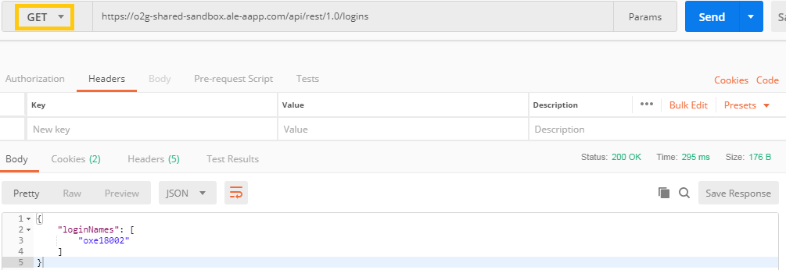

See all users
- Begging with a GET request with this URL :
https://o2g-shared-sandbox.ale-aapp.com/api/rest/1.0/logins

- If you have "Status: 200 OK", the query succeded.
If you are an admin, you will be able to see all the users you administate. In this case, I can only see my username because I'm not log in as administator account.
Informations of one user
In this exemple, we want the informations of user named "oxe18002"
- Make a GET request with https://o2g-shared-sandbox.ale-aapp.com/api/rest/1.0/users/18002
- If you have "Status: 200 OK", the query succeded.
With this query, you will be able to find a phone number for exemple, it's very useful.
Make a Call
For the example, we are the user with the number 19140, and we will call the number 19141.
- Let's start by taking a POST method with the URL
https://o2g-shared-sandbox.ale-aapp.com/api/rest/1.0/telephony/basicCall and fill in the Header with the key "Content-Type" which has for value "application/json".
- In the Body, we will fill it in this way, again with the raw format and JSON enabled.

- If you have the "Status: 201 Created", the query succeded.
Good job ! You're now able to hack the NASA !